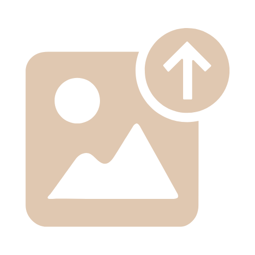
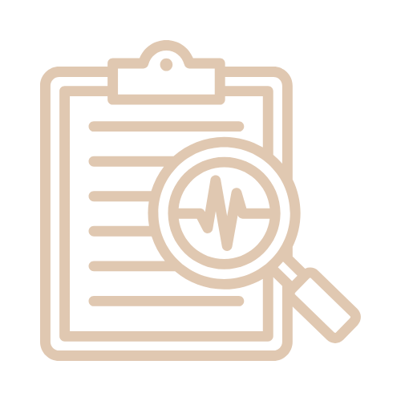
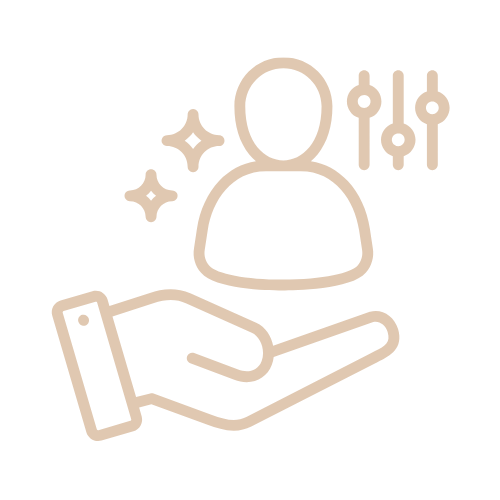
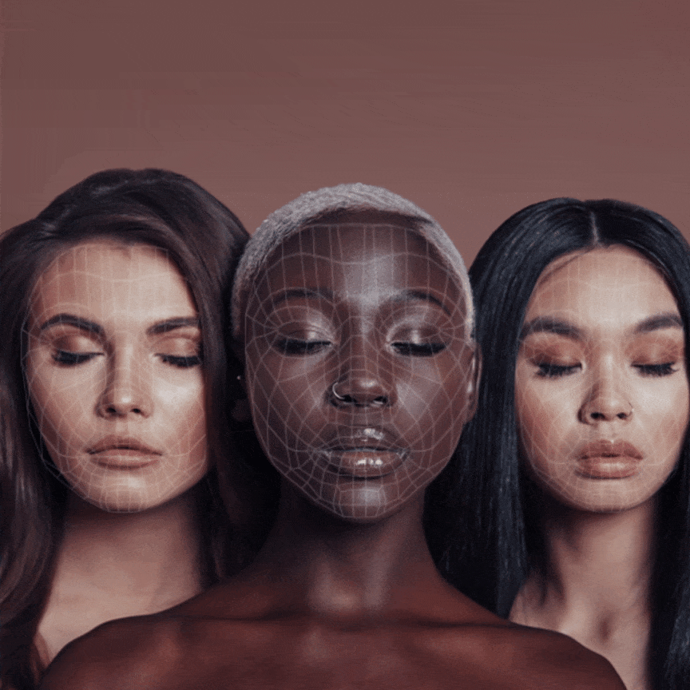

Processo de Análise da Pele

Envie uma foto da sua pele
Nossa IA analisa a imagem

Receba um diagnóstico do tipo de acne

Veja recomendações personalizadas
COMO NOSSA TECNOLOGIA FUNCIONA?
Nossa IA foi treinada por uma banco de imagens para identificar diferentes tipos de acne com precisão, analisando sua foto em poucos segundos.
